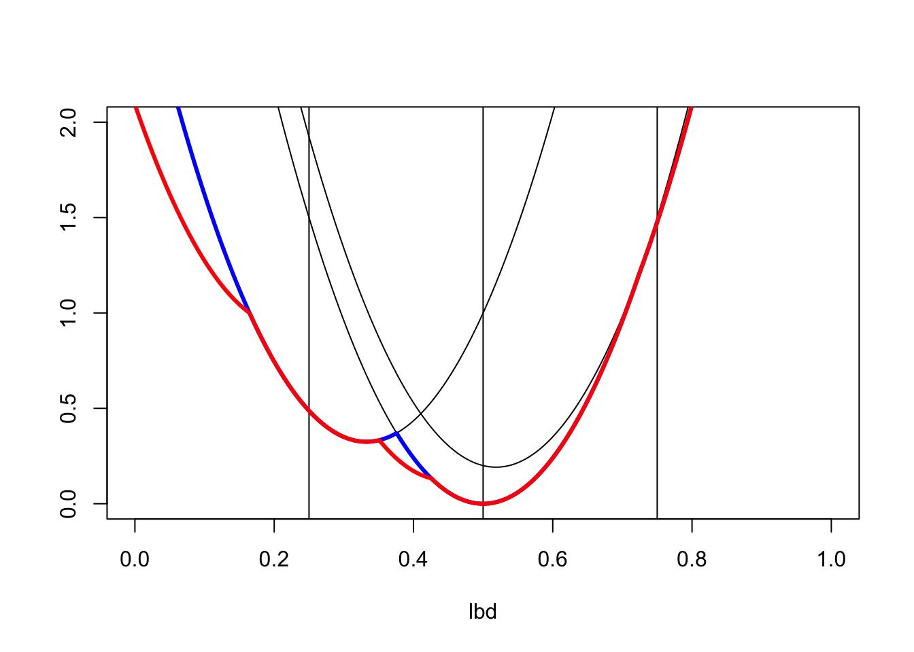
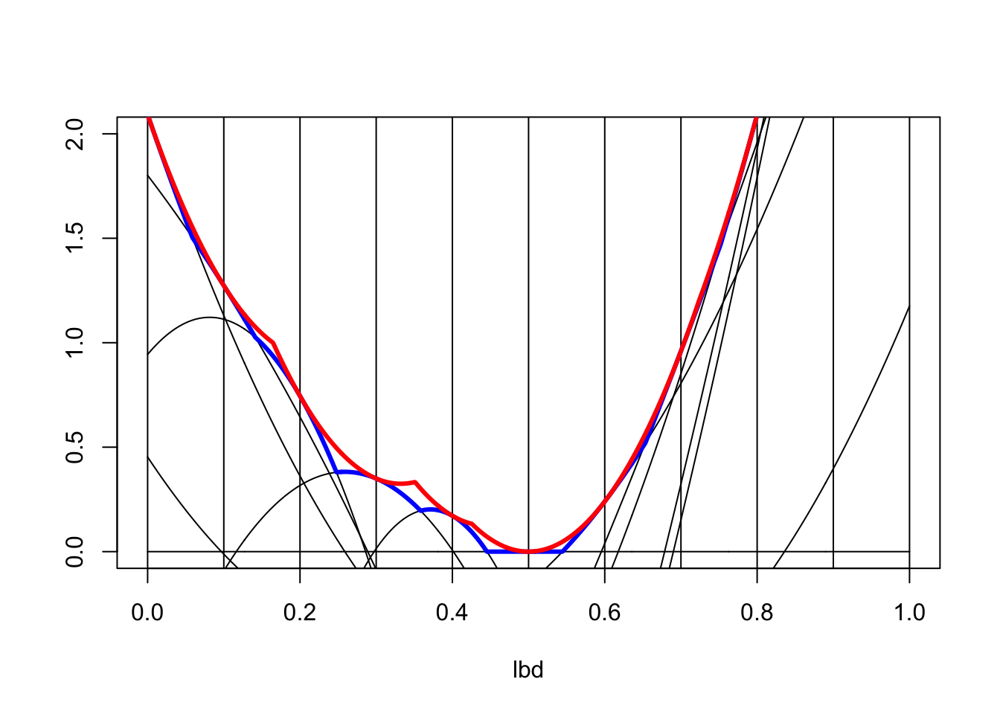
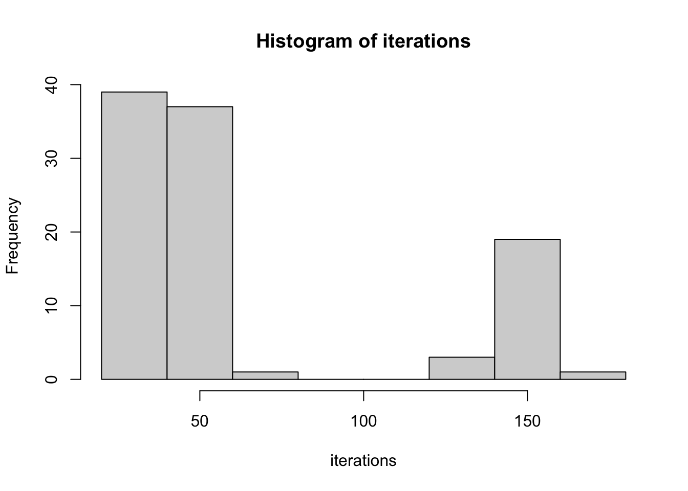
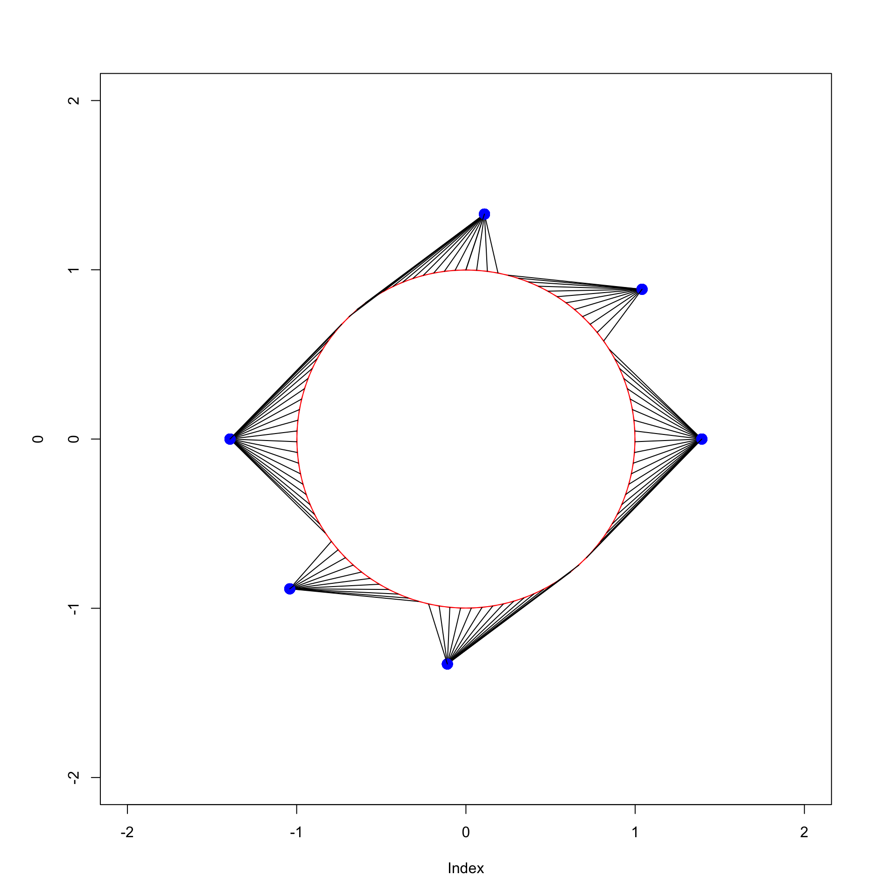
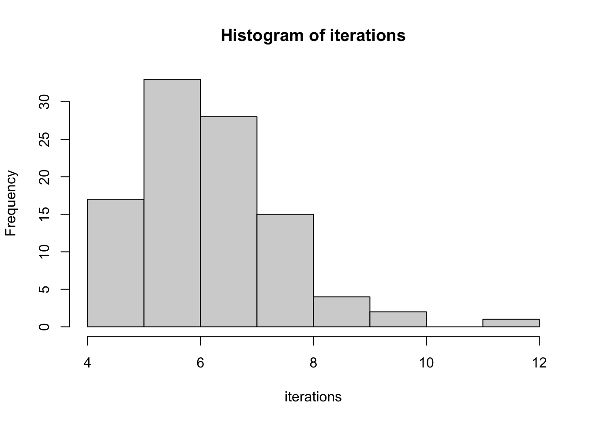
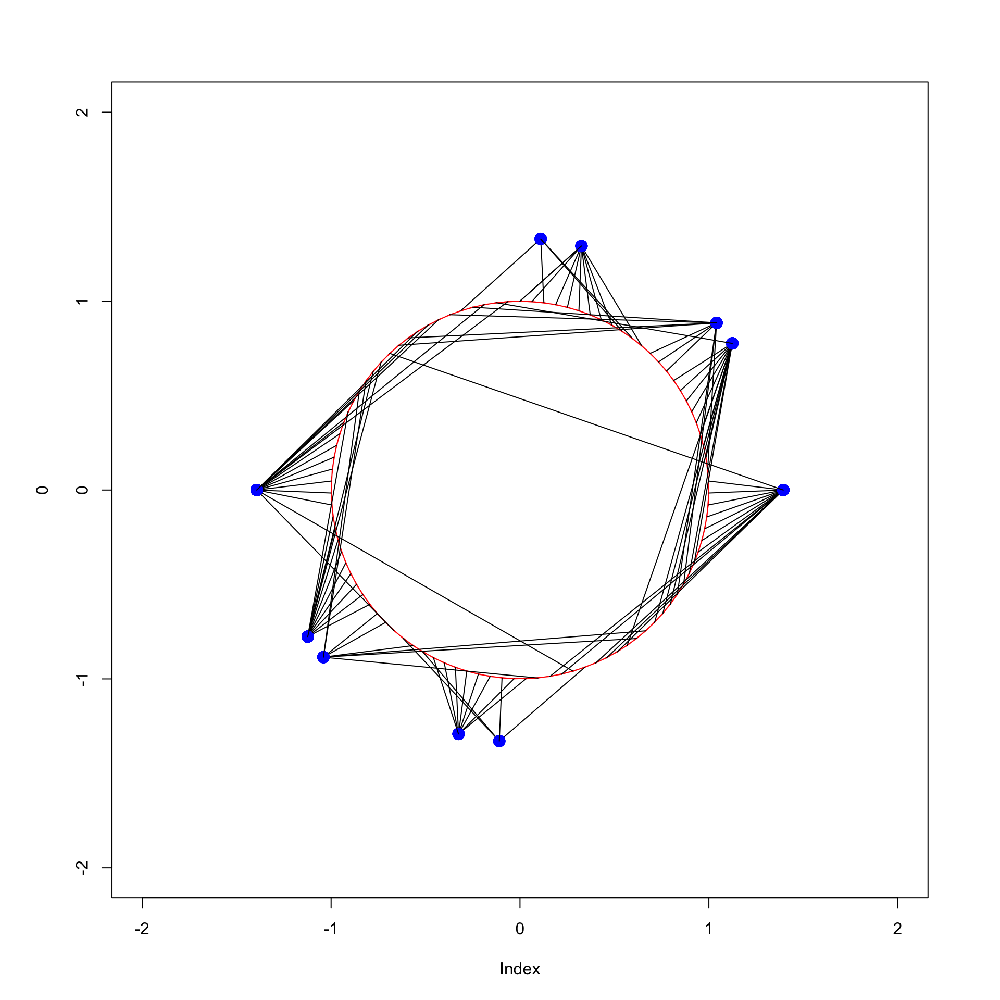
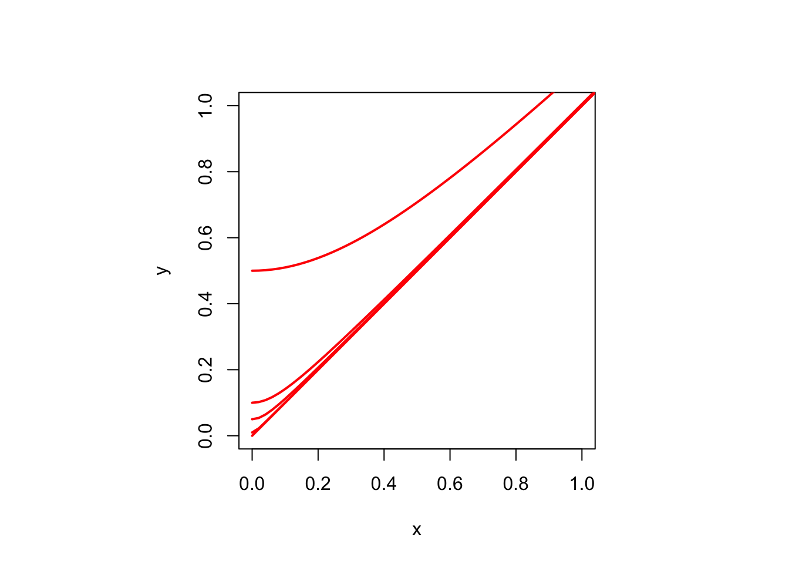
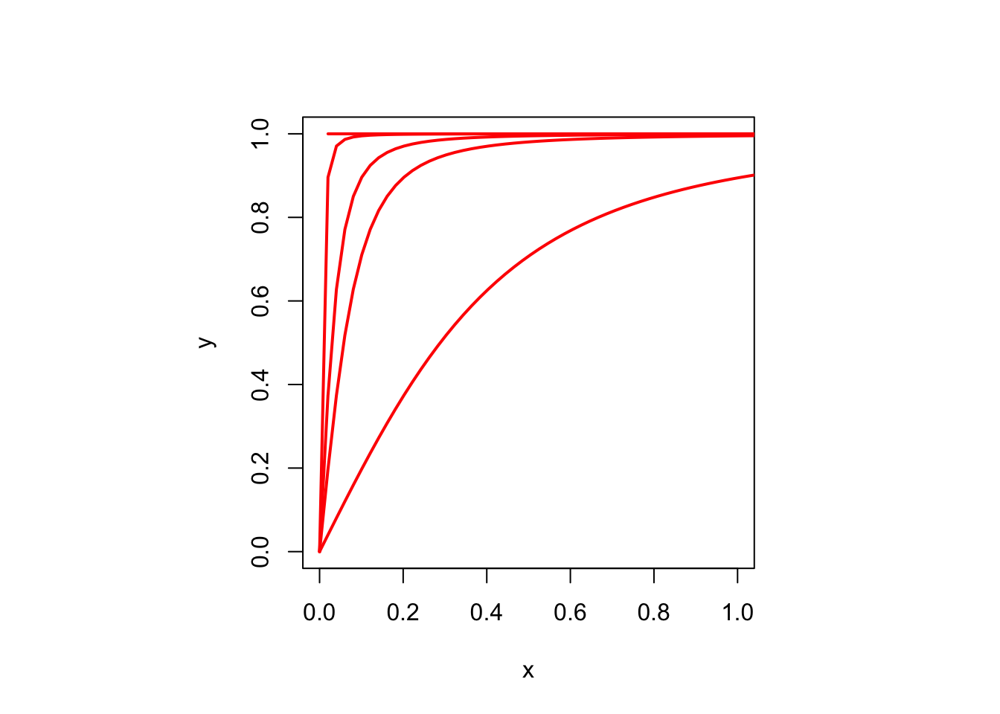

w<-ifelse(outer(1:10,1:10,function(x,y) abs(x-y) <= 3),1,0)
w <- w + diag(0:9)
h1 <- lsuw(1:10, w, projeq)5 Minimization of Basic Stress
5.1 Gradient Methods
The initial algorithms for nonmetric MDS Kruskal (1964) and Guttman (1968) were gradient methods. Thus the gradient, or vector of partial derivatives, was computed in each iteration step, and a step was taken in the direction of the negative gradient (which is also known as the direction of steepest descent).
Informally, if \(f\) is differentiable at \(x\) then \(f(x+h)\approx f(x)+h'\mathcal{D}f(x)\) and the direction \(h\) that minimizes the diferential (the second term) is \(-\mathcal{D}f(x)/\|\mathcal{D}f(x)\|\), the normalized negative gradient. Although psychometricians had been in the business of minimizing least squares loss functions in the linear and bilinear case, this result for general nonlinear functions was new to them. And I, and probably many others, hungrily devoured the main optimization reference in Kruskal (1964), which was the excellent early review by Spang (1962).
Kruskal’s paper also presents an elaborate step-size procedure, to determine how far we go in the negative gradient direction. In the long and convoluted paper Guttman (1968) there is an important contribution to gradient methods in basic MDS. Let’s ignore the complications arising from zero distances, which is after all what both Kruskal and Guttman do as well, and assume all distances at configuration \(X\) are positive. Then stress is differentiable at \(X\), with gradient
\[ \nabla\sigma(X)= -\sum_{i=1}^n\sum_{j=1}^nw_{ij}(\delta_{ij}-d_{ij}(X))\frac{1}{d_{ij}(X)} (e_i-e_j)(x_i-x_j)' \]
Geometrical interpretation - Gleason, Borg-Groenen p 20
Guttman C-matrix
Ramsay C-matrix
5.1.1 Step Size
5.1.1.1 Kruskal Step Size
elaborate
5.1.1.2 Guttman Step Size
constant
5.1.1.3 Cauchy Step Size
In the classical version of the steepest descent method we choose the step-size \(\alpha\) by minimizing \(h(\alpha)=f(x+\alpha y)\) over \(\alpha\)
\[ d_+h(\alpha;\beta)=\lim_{\epsilon\downarrow 0}\frac{f(x+(\alpha+\epsilon\beta)y)-f(x+\alpha y)}{\epsilon}=\beta\ d_+f(x+\alpha y;y) \] or local minimum closest to zero
Newton version
\[ d_+^2h(\alpha;\beta,\gamma)=\beta\gamma d_+^2f(x+\alpha y;y,y) \]
5.1.1.4 Majorization Step Size
Lagrange form of the remainder
\(e(\epsilon)=\eta^2(X+\epsilon Y)\) \(r(\epsilon)=\rho(X+\epsilon Y)\) \(s(\epsilon)=\sigma(X+\epsilon Y)=1-r(\epsilon)+\frac12e(\epsilon)\)
\[ r(\epsilon)\geq r(0)+r'(0)\epsilon \] \[ e(\epsilon)=e(0)+e'(0)\epsilon+\frac12 e''(0)\epsilon^2 \] \[ s(\epsilon)\leq s(0)+s'(0)\epsilon+\frac12 e''(0)\epsilon^2 \] \[ \hat\epsilon=\frac{s'(0)}{e''(0)} \] underestimates newton step
\[ r(\epsilon)\geq r(0)+\epsilon\ r'(0)+\frac12\epsilon^2\min_{0\leq \xi\leq\epsilon}r''(\xi) \] \[ \hat\epsilon=\frac{s'(0)}{e''(0)-\min_{0\leq \xi\leq\epsilon}r''(\xi)} \]
\[ r''(\xi)=\mathcal{D}^2\sigma(X+\xi Y;Y,Y) \]
5.2 Initial Configurations
Random
L
Torgerson
Guttman
5.3 On MM Algorithms
The term majorization is used in mathematics in many different ways. In this book we use it as a general technique for the construction of stable iterative minimization algorithms. An iterative minimization algorithm is stable if it decreases the objective function in each iteration.
Ortega, Rheinboldt Weber Bohning, Lindsay Vosz, Eckart
Special cases of majorization had been around earlier, most notably the smacof algorithm for MDS and the EM algorithm for maximum likelihood with missing data, but in full generality majorization was first discussed in De Leeuw (1994) and Heiser (1995).
Majorization can be used to construct minimization methods, while minorization can construct maximization methods. This cleverly suggests to use the acronym MM algorithms for this class of techniques. An excellent comprehensive account of MM algorithms is Lange (2016). Another such account is slowly growing in one of the companion volumes in this series of personal research histories ((deleeuw_B_21b?)).
Here we just give a quick introduction to majorization. Suppose \(f\) is a real-valued function on \(X\subseteq\mathbb{R}^n\). Then a real-valued function \(g\) on \(X\otimes X\) is said to majorize \(f\) on \(X\) if
\[\begin{equation} g(x,y)\geq f(x)\qquad\forall (x,y)\in X\otimes X, (\#eq:majorineq) \end{equation}\]
and
\[\begin{equation} g(y,y)=f(y)\qquad\forall y\in X. (\#eq:majoreq) \end{equation}\]
Thus for each \(y\in X\) the function \(g(\bullet,y)\) lies above \(f\), and it touches \(f\) from above at \(x=y\). Majorization is strict if \(g(x,y)=f(x)\) if and only if \(x=y\), i.e. if \(y\) is the only point in \(X\) where \(g(\bullet,y)\) and \(f\) touch.
A majorization algorithm to minimize \(f\) on \(X\) starts with an initial estimate, and then updates the estimate in iteration \(k\) by
\[\begin{equation} x^{(k+1)}\in\mathop{\text{argmin}}_{x\in X}g(x,x^{(k)}), (\#eq:majoralg) \end{equation}\]
with the understanding that the algorithms stops when \(x^{(k)}\in\mathop{\text{argmin}}_{x\in X}g(x,x^{(k)})\).
If we do not stop we have an infinite sequence satisfying the sandwich inequality
\[\begin{equation} f(x^{(k+1)})\leq g(x^{(k+1)},x^{(k)})\leq g(x^{(k)},x^{(k)})=f(x^{(k)}). (\#eq:sandwich) \end{equation}\]
The first inequality in this chain comes from @ref(eq:majorineq). It is strict when majorization is strict. The second inequality comes from @ref(eq:majoralg), and it is strict if \(g(\bullet,y)\) has a unique minimum on \(X\) for each \(y\).
Necessary conditions through MM
5.4 Smacof Algorithm
5.4.1 Guttman Transform
The Guttman Transform is named to honor the contribution of Louis Guttman to non-metric MDS (mainly, but by no means exclusively, in Guttman (1968)). Guttman introduced the transform in a slightly different way, and partly for different reasons. In chapter @ref(minstr) we shall see that the Guttman Transform plays a major role in defining and understanding the \(\textrm{smacof}\) algorithm.
The Guttman Transform of a configuration \(X\) is defined as \[\begin{equation} \Gamma(X):=V^+B(X)X, (\#eq:guttrans) \end{equation}\] which is simply equal to \(\Gamma(X)=n^{-1}B(X)X\) if all weights are equal. For some purposes it is useful to think of \(V^+B(X)X\) as a function of the weights, the dissimilarities, and the configuration (see, for exam0ple, chapter @ref(chinverse)), but we reserve the name Guttman transform for a map from \(\mathbb{R}^{n\times p}\) into \(\mathbb{R}^{n\times p}\) .
What we have called \(B(X)\) is what Guttman calls the correction matrix or C-matrix (see De Leeuw and Heiser (1977) for a comparison).
Completing the square in equation @ref(eq:propmatexp) gives \[\begin{equation} \sigma(X)=1+\eta^2(X-\Gamma(X))-\eta^2(\Gamma(X)), (\#eq:gutsquare) \end{equation}\] which shows that \[\begin{equation} 1-\eta^2(\Gamma(X))\leq\sigma(X)\leq 1+\eta^2(X-\Gamma(X)). (\#eq:propsbounds) \end{equation}\]
Note that it follows from @ref(eq:propsbounds) that \(\sigma(X)\geq 1-\eta^2(\Gamma(X))\), with equality if and only if \(X=\Gamma(X)\).
The Guttman transform is
self-scaling (a.k.a. homogeneous of degree zero) because \(\Gamma(\alpha X)=\Gamma(X)\) for all \(-\infty<\alpha<+\infty\). With our definition @ref(eq:bdef) of \(B(X)\) we also have \(\Gamma(0)=0\).
self-centering, because \(\Gamma(X+e\mu')=\Gamma(X)\) for all \(\mu\in\mathbb{R}^p\).
Bounded
Lipschitz
::: { ,proof} We already know, from the CS inequality, that \[\begin{equation} \rho(X)\leq\eta(X). (\#eq:csagain) \end{equation}\]
With the Guttman transform in hand we can apply CS once more, and find
\[\begin{equation} \rho(X)=\text{tr}\ X'B(X)X=\text{tr}\ X'V\Gamma(X)\leq\eta(X)\eta(\Gamma(X)) (\#eq:csagainagain) \end{equation}\]
Note that the Guttman transform is bounded. In fact, using the Euclidean norm throughout, \[ \Gamma(X)\leq\|V^+\|\|B(X)X\| \] Now \[ B(X)X=\mathop{\sum\sum}_{1\leq i<j\leq n}w_{ij}\delta_{ij}\frac{x_i-x_j}{d_{ij}(X)}(e_i-e_j), \] and thus
\[ \|B(X)X\|\leq\mathop{\sum\sum}_{1\leq i<j\leq n}w_{ij}\delta_{ij}\left\|\frac{x_i-x_j}{d_{ij}(X)}\right\|\|e_i-e_j\|=\sqrt{2}\mathop{\sum\sum}_{1\leq i<j\leq n}w_{ij}\delta_{ij}, \] and \[ \|\Gamma(X)\|\leq\sqrt{2}\|V^+\|\mathop{\sum\sum}_{1\leq i<j\leq n}w_{ij}\delta_{ij}. \] In fact \[ B(X)X-B(Y)Y=\mathop{\sum\sum}_{1\leq i<j\leq n}w_{ij}\delta_{ij}\left\{\frac{x_i-x_j}{d_{ij}(X)}-\frac{y_i-y_j}{d_{ij}(Y)}\right\}(e_i-e_j), \] and thus \[ \|\Gamma(X)-\Gamma(Y)\|\leq 2\|V^+\| \mathop{\sum\sum}_{1\leq i<j\leq n}w_{ij}\delta_{ij}, \] and thus the Guttman transform is Lipschitz. ::: ;’’’’ytyh ### Subdifferentials
5.4.2 Derivative
The basic smacof algorithm, which is the main building block for most of the MDS techniques discussed in this book, updates the configuration \(X^{(k)}\) in iteration \(k\) by
\[\begin{equation} X^{(k+1)}=\Gamma(X^{(k)})=V^+B(X^{(k)})X^{(k)}. (\#eq:smacofupdate) \end{equation}\]
so that first \(X^{(1)}=\Gamma(X^{(0)})\), then \(X^{(2)}=\Gamma(X^{(1)})=\Gamma(\Gamma(X^{(0)}))\), and generally \(X^{(k)}=\Gamma^k(X^{0}),\) where \(\Gamma^k\) is the k-times composition (or iteration) of \(\Gamma.\)
We shall show in this chapter that as \(k\rightarrow\infty\) both
\(\sigma(X^{(k+1)})-\sigma(X^{(k)})\rightarrow 0\), and \(\eta^2(X^{(k)}-X^{(k+1)})=(X^{(k+1)}-X^{(k)})'V(X^{(k+1)}-X^{(k)})\rightarrow 0\). The iterations stop either if \(\sigma(X^{(k)})-\sigma(X^{(k+1)})<\epsilon\) or if \(\eta^2(X^{(k)}-X^{(k+1)})<\epsilon\), where the \(\epsilon\) are small cut-off numbers chosen by the user, or if we reach a user-defined maximum number of iterations, and we give up on convergence. The user also chooses if the stop criterion is based on function value changes or configuration changes.
Some quick remarks on implementation. We only have to compute \(V^+\) once, but premultiplying by a full symmetric matrix in each iteration does add quite a few multiplications to the algorithm. If all \(w_{ij}\) are one, then \(V^+=\frac{1}{n}J\) and thus \(\Gamma(X^{(k)})=\frac{1}{n}B(X^{(k)})X^{(k)}\). In fact we do not even have to carry out this division by \(n\), because the basic algorithm is self scaling. which means in this context that \(\Gamma(\alpha X)=\Gamma(X)\) for all \(\alpha\geq 0\).
5.4.3 Global Convergence
The iterations in @ref(eq:smacofupdate) start at some \(X^{(0)}\) and then generate five sequences of non-negative numbers. Define \(\lambda(X):=\rho(X)/\eta(X)\) and \(\Gamma(X):=\eta^2(X-\Gamma(X))\). The five sequences we will look at are
\[\begin{align} \begin{split} \sigma_k&:=\sigma(X^{(k)}),\\ \rho_k&:=\rho(X^{(k)}),\\ \eta_k&:=\eta(X^{(k)}),\\ \lambda_k&:=\lambda(X^{(k)}),\\ \Gamma_k&:=\Gamma(X^{(k)}), \end{split} (\#eq:smacofseq) \end{align}\]
Depend on \(X^{(0)}\)
Zangwill
Argyros
5.4.3.1 From the CS Inequality
\(\sigma_k\) is a decreasing sequence, bounded below by 0.
\(\rho_k\), \(\eta_k\), amd \(\lambda_k\) are increasing sequences, bounded above by 1.
\(\Gamma_k\) is a null-sequence.
To prove convergence of these sequences we slightly modify and extend the proofs in De Leeuw (1977) and De Leeuw and Heiser (1977) (while I say to myself: that’s 44 years ago).
Proof.
For each \(X\in\mathbb{R}^{n\times p}\) we have \(\rho(X)\leq\eta(X)\) and thus \(\lambda(X)\leq 1\).
For each \(X,Y\in\mathbb{R}^{n\times p}\) we have \(\rho(X)\geq\text{tr}\ X'B(Y)Y\) and thus \(\rho(X)\geq\text{tr}\ X'V\Gamma(Y)\). Taking \(X=\Gamma(Y)\) we see that \(\rho(X)\geq\eta^2(\Gamma(Y))\). Now \(\sigma(\Gamma(Y))=1-2\rho(\Gamma(Y))+\eta^2(\Gamma(Y))\leq 1-\eta^2(\Gamma(Y))\) and thus for all \(X\) \(\eta^2(\Gamma(X)) \leq 1\).
For each \(X\in\mathbb{R}^{n\times p}\) we have \(\rho(X)=\text{tr}\ X'B(X)X\) and thus \(\rho(X)\leq\eta(X)\eta(\Gamma(X))\) and thus \(\lambda(X)\leq\eta(\Gamma(X))\)
\[ \rho(X^{(k)})=\text{tr}\ \{X^{(k)}\}'VX^{(k+1)}\leq\eta(X^{(k)})\eta(X^{(k+1)}), \]
\[ \rho(X^{(k+1)})\geq\text{tr}\ \{X^{(k+1)}\}'B(X^{(k)})X^{(k)}=\eta^{2}(X^{(k+1)}), \]
\[ \eta(X^{(k)})\leq\lambda(X^{(k)})\leq\eta(X^{(k+1)}) \]
and
\[ \rho(X^{(k)})\leq\frac{\eta(X^{(k)}}{X^{(k+1)}}\rho(X^{(k+1)})\leq\rho(X^{(k+1)}) \]
5.4.3.2 From Majorization
Smacof is based on the majorization, valid for all configurations \(X\) and \(Y\),
\[\begin{equation} \sigma(X)\leq 1+\eta^2(X-\Gamma(Y))-\eta^2(\Gamma(Y)), (\#eq:upbmajineq) \end{equation}\]
with equality if and only if \(X\propto Y\). If \(Y=\alpha X\) for some \(\alpha\) then \[\begin{equation} \sigma(X)=1+\eta^2(X-\Gamma(Y))-\eta^2(\Gamma(Y)), (\#eq:upbmajeq) \end{equation}\] and specifically we have @ref(eq:upbmajeq) if \(Y=X\).
Now suppose we have an \(Y\) with \(Y\not=\Gamma(Y)\). If \(\eta^2(X-\Gamma(Y))\leq\eta^2(Y-\Gamma(Y))\) then
\[\begin{align} \begin{split} \sigma(X)%\leq 1+\eta^2(X-\Gamma(Y))-\eta^2(\Gamma(Y))\leq\\ &\leq 1+\eta^2(Y-\Gamma(Y))-\eta^2(\Gamma(Y))=\sigma(Y) \end{split} (\#eq:upbmajimp) \end{align}\]
The obvious choice for \(X\) is \(X=\Gamma(Y)\), which makes \(\eta^2(X-\Gamma(Y))=0\), and thus
\[\begin{equation} \sigma(X)\leq 1-\eta^2(\Gamma(Y))< 1+\eta^2(Y-\Gamma(Y))-\eta^2(\Gamma(Y))=\sigma(Y) (\#eq:upbmajmin) \end{equation}\]
5.4.3.3 From Ratio of Norms
De Leeuw (1977)
DC Algorithm
Robert
5.4.4 Component Rotated Smacof
Consider the modified smacof iterations \(\tilde X^{(k+1)}=X^{(k+1)}L^{(k+1)}\), where \(L^{(k+1)}\) are the normalized eigenvectors of \(\{X^{(k+1)}\}^TVX^{(k+1)}\). Then
\[ \sigma(\tilde X^{(k)})=\sigma(X^{(k)}) \] Thus the modified update produces the same sequence of stress values as the basic update. Also \[ \Gamma(\tilde X^{(k)})=\Gamma(X^{(k)})L^{(k)} \] Thus \(\tilde X^{(k)}\) and \(X^{(k)}\) differ by a rotation for each \(k\). It follows that we can actually compute \(\tilde X^{(k)}\) from the basic sequence \(X^{(k)}\) by rotating the \(X^{(k)}\) to principal components. Specifically if \(X_\infty\) is a subsequential limit of \(X^{(k)}\) then the corresponding limit of \(\tilde X^{(k)}\) is \(X_\infty\) rotated to principal components. Modifying the intermediate updates is just a waste of time, we can simply rotate the final smacof solution. And we should, as we explain in the next section, @ref(minlocconv).
5.4.5 Local Convergence
\[ \mathcal{D}\Gamma(X)(Y)=V^+\left\{B(X)Y-\mathop{\sum\sum}_{1\leq i<j\leq n} w_{ij}\frac{\delta_{ij}}{d_{ij}(X)}\left(\frac{\text{tr}\ Y'A_{ij}X}{d_{ij}^2(X)}\right)A_{ij}\right\} \]
For any X: one zero eigenvalue \(\mathcal{D}\Gamma(X)(X)=0\)
If on \(\mathbb{R}^{n\times p}\) then an additional \(p\) zero eigenvalues \(\mathcal{D}\Gamma(X)(e\mu^T)=0\)
For \(X=\Gamma(X)\) and \(M\) anti-symmetric: \(\frac12 p(p-1)E\) unit eigenvalues \(\mathcal{D}\Gamma(X)(XM)=\Gamma(X)M=XM\)
5.4.5.1 Cross Product Iterations
Map of C into C. No rotational indeterminacy. Same stress sequence.
\[ C^{(k+1)}=V^+B(C^{(k)})C^{(k)}B(C^{(k)})V^+ \] Map of \(D\) into \(D\). Guttman transform as function of distances. Not very nice.
\[ D^{(k+1)}:=D(X^{(k+1)})=D(\Gamma(X^{(k)})) \]
5.4.5.2 Rotation to PC
We suppose the configfuration \(X\) is \(n\times p\), with rank \(p\). If the singular value decomposition is \(X=K\Lambda L'\) then the rotation to principle components is \(\Gamma(X):=K\Lambda=XL\). Thus \(\mathcal{D}\Gamma(X)(Y)=YL+X\mathcal{D}L(X)(Y)\). So we need to compute \(\mathcal{D}L(X)\), with \(L\) the right singular vectors of \(X\), i.e. the eigenvectors of \(X^TX\). We use the methods and results from De Leeuw (2007), which were applied to similar problems in De Leeuw (2008), De Leeuw and Sorenson (2012), and De Leeuw (2016).
If the \(n\times p\) matrix has rank \(p\), singular value decomposition \(X=K\Lambda L^T\), with all singular values different, then \(\Gamma(X+\Delta)=\Gamma(X)+\Delta L+XLM+o(\|\Delta\|)\), where \(M\) is antisymmetric with off-diagonal elements
\[\begin{equation} m_{ij}=\frac{\lambda_is_{ij}+\lambda_js_{ji}}{\lambda_i^2-\lambda_j^2}. (\#eq:minsvdmsolve) \end{equation}\]
Proof. The proof involves computing the derivatives of the singular value decomposition of \(X\), which is defined by the equations
\[\begin{align} XL&=K\Lambda,(\#eq:minsvd1)\\ X^TK&=L\Lambda,(\#eq:minsvd2)\\ K^TK&=I,(\#eq:minsvd3)\\ L^TL&=LL^T=I.(\#eq:minsvd4) \end{align}\]
We now perturb \(X\) to \(X+\Delta\), which perturbs \(L\) to \(L+L_\Delta+o(\|\Delta\|)\), \(K\) to \(K+K_\Delta+o(\|\Delta\|)\), and \(\Lambda\) to \(\Lambda+\Lambda_\Delta+o(\|\Delta\|)\). Substutute this into the four SVD equations for \(X+\Delta\) and keep the linear terms.
\[\begin{align} XL_\Delta+\Delta L&=K_\Delta\Lambda+K\Lambda_\Delta,(\#eq:minsvdperb1)\\ X^TK_\Delta+\Delta^TK&=L_\Delta\Lambda+L\Lambda_\Delta,(\#eq:minsvdperb2)\\ L_\Delta^TL+L^TL_\Delta&=0,(\#eq:minsvdperb3)\\ K_\Delta^TK+K^TK_\Delta&=0.(\#eq:minsvdperb4) \end{align}\]
Define \(M:=L^TL_\Delta\) and \(N:=K^TK_\Delta\). Then equations @ref(eq:minsvdperb3) and @ref(eq:minsvdperb4) say that \(M\) and \(N\) are antisymmetric. Also define \(S:=K^T\Delta L\). Premultiplying equation @ref(eq:minsvdperb1) by \(K^T\) and @ref(eq:minsvdperb2) by \(L^T\) gives
\[\begin{align} \Lambda M+S&=N\Lambda+\Lambda_\Delta,(\#eq:minsvdred1)\\ \Lambda N+S^T&=M\Lambda+\Lambda_\Delta.(\#eq:minsvdred2) \end{align}\]
Either of these two equations gives, using the antisymmetry, and thus hollowness, of \(M\) and \(N\), that \(\Lambda_\Delta=\text{diag}(S)\). Define the hollow matrix \(U:=S-\text{diag}(S)\). Then
\[\begin{align} \Lambda M-N\Lambda&=U,(\#eq:minsvdu1)\\ \Lambda N-M\Lambda&=U^T.(\#eq:minsvdu2) \end{align}\]
Premultiply @ref(eq:minsvdu1) and postmultiply @ref(eq:minsvdu2) by \(\Lambda\).
\[\begin{align} \Lambda^2 M-\Lambda N\Lambda&=\Lambda U,(\#eq:minsvdu3)\\ \Lambda N\Lambda-M\Lambda^2&=U^T\Lambda.(\#eq:minsvdu4) \end{align}\]
If we add these two equations we can solve for the off-diagonal elements of \(M\) and find the expression in the theorem. Since \(L_\Delta=LM\) this completes the proof.
5.4.6 Data Asymmetry
The non-basic situation in which there are asymmetric weights and/or asymmetric dissimilarities in basic MDS is analyzed in De Leeuw (1977), although it is just standard linear least squares projection theory. We give a slightly different partitionng ofd the sum of squares here. Note that it is not even necessary that the weights and dissimilarities are hollow and/or non-negative.
We decompose the weights and dissimilarities additively into a symmetric and anti-symmetric part. Thus \(w_{ij}=w_{ij}^S+w_{ij}^A\) and \(\delta_{ij}=\delta_{ij}^S+\delta_{ij}^A\). Now in general if \(A\) is anti-symmetric and \(B\) is symmetric, then \(\text{tr}\ AB=0\). Also their Hadamard (element-wise) product \(A*B\) is anti-symmetric, and the Hadamard product of two anti-symmetric matrices is symmetric. Using these rules gives after some calculation \[\begin{align} \begin{split} \sigma(X)&=\frac14\sum_{i=1}^n\sum_{j=1}^nw_{ij}(\delta_{ij}-d_{ij}(X))^2=\\&=\frac14\sum_{i=1}^n w_{ii}^{\ }\delta_{ii}^2+ \frac12\mathop{\sum\sum}_{1\leq i<j\leq n}w_{ij}^S\left\{\underline{\delta}_{ij}-d_{ij}(X)\right\}^2+\frac12\mathop{\sum\sum}_{1\leq i<j\leq n}\frac{w_{ij}w_{ji}}{w_{ij}^S}\{\delta_{ij}^A\}^2, \end{split}(\#eq:partiunsym) \end{align}\] where \[\begin{equation} \underline{\delta}_{ij}:=\delta_{ij}^S+\frac{w_{ij}^A\delta_{ij}^A}{w_{ij}^S}. (\#eq:defofunddelta) \end{equation}\] Thus minimizing stress in the case of asymmetric weights and dissimilarities, which even can be non-hollow and non-positive, reduces to a symmmetric basic MDS problem for adjusted dissimilarities defined by equation @ref(eq:defofunddelta). If the original weights and dissimilarities are non-negative, then so are the weights \(w_{ij}^S\) and the dissimilarities \(\underline{\delta}_{ij}\).
5.4.7 Replications
If there are replications in basic MDS we can use a simple partitioning of stress to reduce the problem to standard form. We start with \[\begin{equation} \sigma(X)=\frac12\sum_{k=1}^m\mathop{\sum\sum}_{1\leq i<j\leq n}w_{ijk}(\delta_{ijk}-d_{ij}(X))^2. \#(eq:inddiffstress) \end{equation}\] Let \[\begin{align} w_{ij\bullet}&=\sum_{k=1}^m w_{ijk}(\#eq:wbul1)\\ \delta_{ij\bullet}&=\frac{\sum_{k=1}^m w_{ijk}\delta_{ijk}}{w_{ij\bullet}}(\#eq:wbul2). \end{align}\] Then \[\begin{equation} \sigma(X)=\frac12\mathop{\sum\sum}_{1\leq i<j\leq n} w_{ij\bullet}(\delta_{ij\bullet}-d_{ij}(X))^2+\frac12\sum_{k=1}^m\mathop{\sum\sum}_{1\leq i<j\leq n} w_{ijk}(\delta_{ijk}-\delta_{ij\bullet})^2, (\#eq:partinddiff) \end{equation}\] and it suffices to minimize the first term, which is a standard basic MDS problem.
In the nonmetric case, in which in principle each of the \(\Delta_k\) can be transformed, we must alternate minimization of #ref(eq:inddiffstress) over the \(\Delta_k\) and minimization of @ref(eq:partinddiff) over \(X\). In the case in which \(X_k\) is different pover replications we use the methods of chapter @ref(chindif).
5.4.8 Negative Dissimilarities
\[\begin{equation} \sigma(X)=1-\sum_{k\in\mathcal{K}_{1+}} w_k\delta_kd_k(X) +\sum_{k\in\mathcal{K}_{1-}} w_k|\delta_k|d_k(X)+\frac12\sum_{k\in\mathcal{K}} w_kd_k^2(X)). (\#eq:disneg) \end{equation}\]
Split rho
Heiser (1991)
5.4.9 Normalization
In actual computer output using the scaling in formula @ref(eq:scaldiss1) and @ref(eq:scaldiss1) has some disadvantages. There are, say, \(M\) non-zero weights. The summation in #ref(eq:stressall) is really over \(M\) terms only. If \(n\) is at all large the scaled dissimilarities, and consequently the distances and the configuration, will become very small. Thus, in actual computation, or at least in the computer output, we scale our dissimilarities as \(\frac12\mathop{\sum\sum}_{1\leq j<i\leq n} w_{ij}^{\ }\delta_{ij}^2=M\). So, we scale our dissimilarities to one in formulas and to \(M\) in computations. Thus the computed stress will b
In fact, we do not even use it in our computer programs, except at the very last moment when we return the final stress after the algorithm has completed.
5.4.10 Unweighting
Consider the general problem of minimizing a least squares loss function, defined as \(f(x):=(x-y)'W(x-y)\) over \(x\) in some set \(X\), where \(W\) is a symmetric weight matrix. Sometimes \(W\) complicates the problem, maybe because it is too big, too full, too singular, or even indefinite. We will use iterative majorization to give \(W\) a more subordinate role. See also Kiers (1997) and Groenen, Giaquinto, and Kiers (2003).
Suppose \(z\) is another element of \(X\). Think of it as the current best approximation to \(y\) that we have, which we want to improve. Then
\[\begin{align} \begin{split} f(x)&=(x-y)'W(x-y)\\ &=((x-z)+(z-y))'W((x-z)+(z-y))\\ &=f(z)+2(x-z)'W(z-y)+(x-z)'W(x-z) \end{split} (\#eq:unwgth) \end{align}\]
Now choose a non-singular \(V\) such that \(W\lesssim V\) and define \(u:=V^{-1}W(z-y)\). Then we have the majorization
\[\begin{equation} f(x)\leq f(z)+2(x-z)'W(z-y)+(x-z)'V(x-z)=\\ f(z)+2(x-z)'Vu+(x-z)'V(x-z)=\\ f(z)+(x-(z-u))'V(x-(z-u))-u'Vu. (\#eq:compsq) \end{equation}\]
Here are some ways to choose \(V\). We use \(\lambda_{\text{max}}(W)\) and \(\lambda_{\text{min}}(W)\) for the largest and smallest eigenvalues of the symmetric matrix \(W\).
For any \(W\) we can choose \(V=\lambda_{\text{max}}(W)I\). Or, more generally, \(V=\lambda_{\text{max}}(D^{-1}W)D\) for any positive definite \(D\). If \(W\) is singular we can choose \(V=W+\epsilon D\) for any positive definite \(D\). And in the unlikely case that \(W\) is indefinite we can choose \(V=W+(\epsilon-\lambda_{\text{min}}(W))I\). But if \(W\) is indefinite we have more serious problems.
In appendix @ref(apcodemathadd) the R function lsuw(), implements the iterative majorization algorithm minimizing \((x-y)'W(x-y)\) over \(x\) in some set \(X\). One of the parameters of lsuw() is a function proj(), which projects a vector on \(X\) in the metric define by \(V\). The projection could be on the positive orthant, on a cone with isotone vectors, on a linear subspace, on a sphere, on a set of low-rank matrices, and so on.
As an example choose \(W\) as a banded matrix of order 10 with \(w_{ij}=1\) if \(|i-j|\leq 3\) and \(i\not= j\), \(w_{ij}=i\) if \(i=j\), and \(w_{ij}=0\) otherwise. We require all 10 elements of \(x\) to be the same, and we use \(V=\lambda_{\text{max}}(W)I\) (the default).
The iterations are
If we use \(\lambda_{\text{max}}(D^{-1}W)D\) with \(D=\text{diag}(W)\) for \(V\) we see the following majorization iterations.
d <- diag(w)
v <- max(eigen((1 / d) * w)$values) * diag(d)
h2 <- lsuw(1:10, w, v = v, projeq)So the second method of choosing \(V\) is a tiny bit less efficient in this case, but it really does not make much of a difference. In both cases \(x\) is 6.3009558, 6.3009558, 6.3009558, 6.3009558, 6.3009558, 6.3009558, 6.3009558, 6.3009558, 6.3009558, 6.3009558 with function value 595.6699029.
Apply to stress and to
Inner iterations, use one.
\[ \sigma_c(X):=\mathop{\sum\sum}_{1\leq i<j\leq n}\mathop{\sum\sum}_{1\leq k<l\leq n}w_{ijkl}(\delta_{ij}-d_{ij}(X))(\delta_{kl}-d_{kl}(X)) \] If \(A\leq B\) (elementwise) then \(\sum\sum(b_{ij}-a_{ij})(x_i-x_j)^2\geq 0\) and thus \(V(A)\lesssim V(B)\).
5.4.10.1 Symmetric non-negative matrix factorization
\(w_{ij}=\sum_{s=1}^rv_{is}^2v_{js}^2\) for all \(i\not= j\). Then \[ \sigma(X)=\sum_{s=1}^p\mathop{\sum\sum}_{1\leq i<j\leq n}( \delta_{ijs}-d_{ijs}(X))^2 \] with \(\delta_{ijs}:=v_{is}v_{js}\delta_{ij}\) and \(d_{ijs}(X):=v_{is}v_{js}d_{ij}(X)\).
5.5 Stress Envelopes
intro
5.5.1 CS Majorization
\(\sigma\) is the lower envelop of an infinite number of convex quadratics.
Proof. By the CS inequality
\[\begin{equation} d_{ij}(X)=\max_Y \frac{\text{tr}\ X^TA_{ij}Y}{d_{ij}(Y)}, (\#eq:dasmax) \end{equation}\]
which implies
\[\begin{equation} \sigma(X)=\min_Y\left(1-\text{tr}\ X^TB(Y)Y+\frac12\text{tr}\ X^TVX\right), (\#eq:sigasmin) \end{equation}\]
which is what we set out to prove.
We can use the lower envelop of a finite number of the quadratics from theorem @ref(thm:proplowenv) to approximate stress. This is illustrated graphically, using a small example in which the configuration is a convex combination of two fixed configurations. Thus in the example stress is a function of the single parameter \(0\leq\lambda\leq 1\) defining the convex combination. In figure @ref(fig:upperfig) stress is in red, and we have used the three quadratics corresponding with \(\lambda\) equal to 0.25, 0.5, 0.75. The maximum of the three quadratics is in blue, and the approximation is really good, in fact almost perfect in the areas where the blue is not even visible. As an aside, we also see three points in the figure where stress is not differentiable. The minimum of the three quadratics is also not differentiable at a point, but that point is different from the points where stress is non-smooth.
Note that by definition stress and the lower envelop of the quadratics are equal at the three points where \(\lambda\) is 0.25, 0.5, 0.75, i.e at the three vertical lines in the plot.

5.5.2 AM/GM Minorization
Instead of approximating stress from above, we can also approximate it from below.
\(\sigma\) is the upper envelop of an infinite number of quadratics.
Proof. By AM/GM
\[\begin{equation} d_{ij}(X)\leq\min \frac12\frac{1}{d_{ij}(Y)}\{d_{ij}^2(X)+d_{ij}^2(Y)\} (\#eq:dasmin) \end{equation}\]
Thus
\[\begin{equation} \sigma(X)=\max_Y \left(1-\frac12\rho(Y)+\frac12\text{tr}\ X'(V-B(Y))X\right) (\#eq:sigmax) \end{equation}\]

Again we illustrate this result using a finite number of quadratics. In figure @ref(fig:lowerfig) we choose \(\lambda\) equal to 0, 0.1, 0.2, 0.3, 0.4, 0.5, 0.6, 0.7, 0.8, 0.9, 1. Although we now use 11 quadratics, and thus force the envelop to be equal to the function at the 11 points on the vertical lines in the plot, the approximation is poor. This seems to be mainly because the convex-like function stress must be approximated from below by quadratics which are often concave.
5.5.3 Dualities
\[\begin{multline} \min_X\sigma(X)=\min_Y \left(1 - \frac12\text{tr}\ Y'B(Y)V^+B(Y)Y\right)=\\1-\frac12\max_Y\text{tr}\ Y'B(Y)V^+B(Y)Y. \end{multline}\]
Thus minimizing stress is equivalent to maximizing \(\eta^2(V^+B(X)X)\).
\[ \min_X\sigma(X)\geq\max_{B(Y)\lesssim V}(1-\rho(Y)) \]
By the minimax inequality \(\min_X\sigma(X)=\min_X\max_Y\theta(X,Y)\geq\max_Y\min_X\theta(X,Y).\) Now \(\min_X\theta(X,Y)\) is \(-\infty\), unless \(B(Y)\lesssim V\), in which case \(\min_X\theta(X,Y)=0\). Thus \[ \max_Y\min_X\theta(X,Y)=\max_{B(Y)\lesssim V}(1-\rho(Y))=1-\min_{B(Y)\lesssim V}\ \rho(Y) \]
5.6 Smacof in Coefficient Space
5.7 Newton in MDS
5.7.1 Regions of Attraction
delta <- as.matrix (dist (diag (4)))
delta <- delta * sqrt (2 / sum (delta ^ 2))5.7.1.1 Smacof
We use the smacof() function from the code in the appendix with 100 different starting points of \(\theta\), equally spaced on the circle. Figure @ref(fig:histsmacof) is a histogram of the number of smacof iterations to convergence within 1e-15. In all cases smacof converges to a local minimum in coefficient space, never to a saddle point. Figure @ref(fig:pathsmacof) shows which local minima are reached from the different starting points. This shows, more or less contrary to what Trosset and Mathar (1997) suggests, that non-global minima can indeed be points of attraction for smacof iterations.


5.7.1.2 Newton
We repeat the same exercise with Newton’s method, which also converges from all 100 starting points in our example. In higher dimensions we may not be so lucky.
The histogram of iteration counts is in figure @ref(fig:histnewton). It shows in this example that smacof needs about 10 times the number of iterations that Newton needs. Because smacof iterations are much less expensive than Newton ones, this does not really say much about computing times. If we look at figure @ref(fig:pathnewton) we see the problem with non-safeguarded Newton. Although we have fast convergence from all 100 starting points, Newton converges to a saddle point in 45 cases.


5.8 Distance Smoothing
In sections @ref(propconvex) and @ref(propstationary) we show the lack of differentiability in basic MDS is not a serious problem in the actual computation of local minima.
There is another rather straightforward way to circumvent the differentiabily issue, which actually may have additional benefits. The idea is to use an approximation of the Euclidean distance that is as close as possible on the positive real axis, but smooth at zero. This was first applied in unidimensional MDS by Pliner (Pliner (1986), Pliner (1996)) and later taken up and generalized to pMDS for arbitrary \(p\), and even for arbitrary Minkovski metrics, by Groenen, Heiser, and Meulman (1998) and Groenen, Heiser, and Meulman (1999). They coined the term distance smoothing for this variation of the \(\textrm{smacof}\) framework for MDS.
Pliner (1986) uses a smooth approximation of the sign function, while Groenen, Heiser, and Meulman (1998) borrow the smooth Huber approximation of the absolute value function from robust regression. We use another classical and efficient approximation \(|x|\approx\sqrt{x^2+\epsilon^2}\) to the absolute value function, used in image analysis, location analysis, and computational geometry (De Leeuw (2018), Ramirez et al. (2014)). In our context that becomes \(d_{ij}(X)\approx d_{ij}(X,\epsilon):=\sqrt{d_{ij}^2(X)+\epsilon^2}\). Note that on the non-negative reals \[\begin{equation} \max(\epsilon,d_{ij}(X))\leq d_{ij}(X,\epsilon)\leq d_{ij}(X)+\epsilon. (\#eq:smoothineq) \end{equation}\] Figures @ref(fig:dfsmoother) and @ref(fig:ddsmoother) show the absolute value function and its derivative are approximated for \(\epsilon\) equal to 0, 0.01, 0.05, 0.1, 0.5.


The distance smoother we use fits nicely into \(\textrm{smacof}\). Define \(X_\epsilon:=\begin{bmatrix}X&\mid&\epsilon I\end{bmatrix}\). Then \(d_{ij}(X_\epsilon)=\sqrt{d_{ij}^2(X)+\epsilon^2}\). Thus we can define \[\begin{equation} \sigma_\epsilon(X):=\sigma(X_\epsilon)=\mathop{\sum\sum}_{1\leq i<j\leq n}w_{ij}(\delta_{ij}- d_{ij}(X_\epsilon))^2, (\#eq:sigmaepsilon) \end{equation}\] with \(\rho_\epsilon\) and \(\eta^2_\epsilon\) defined in the same way.
For a fixed \(\epsilon>0\) now \(d_{ij}(X_\epsilon)\), and thus stress, is (infinitely many times) differentiable on all of \(\mathbb{R}^{n\times p}\). Moreover \(d_{ij}(X,\epsilon)\) is convex in \(X\) for fixed \(\epsilon\) and jointly convex in \(X\) and \(\epsilon\), and as a consequence so are \(\rho_\epsilon\) and \(\eta^2_\epsilon\).